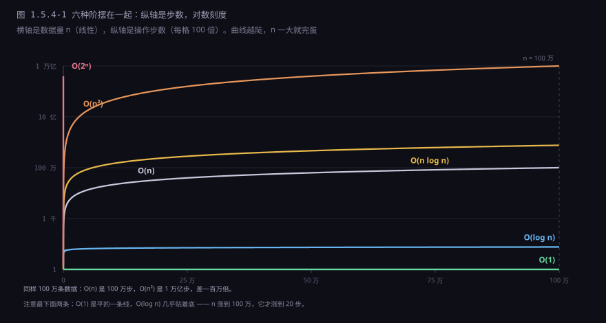
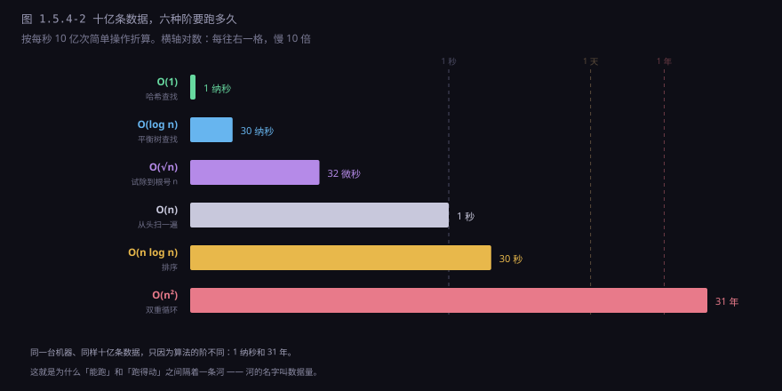
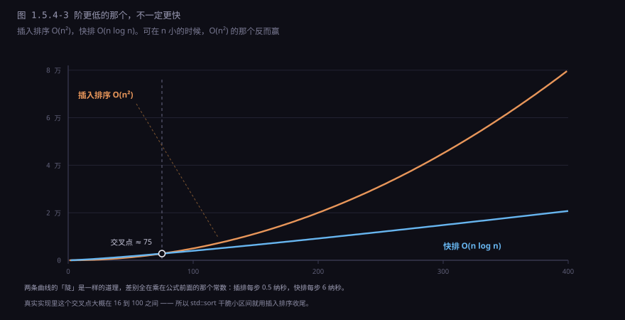
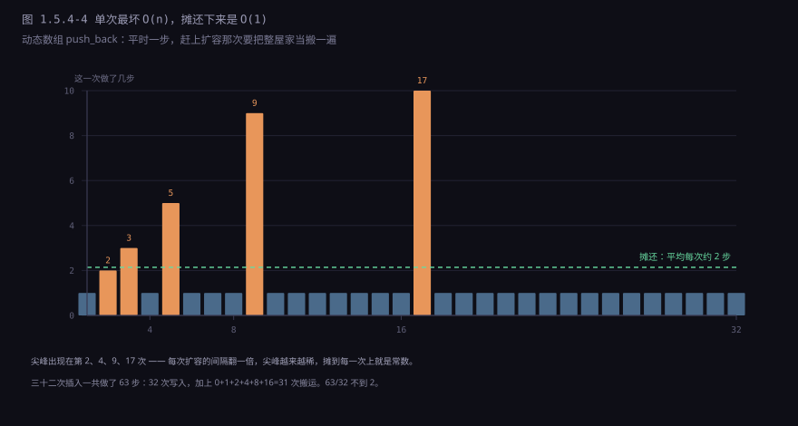
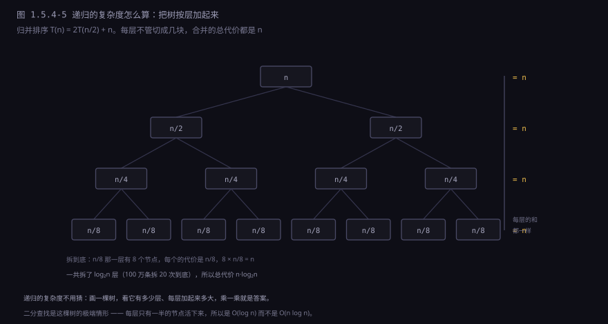
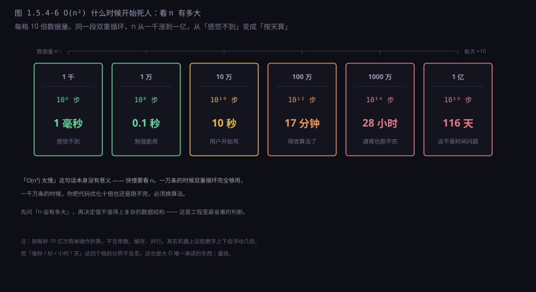

约 0.75 万字 · 6 张图 · 读完你能说清大 O 到底在比什么、 为什么它故意不算常数、什么时候这个「不算」会让你判断失误， 以及拿到一段陌生代码时怎么估它要跑多久
前三节各讲了一种「查找一百万人里的你」，交出三个数字：
| 做法 | 要几步 | 每步多贵 | 写成大 O |
|---|---|---|---|
| 哈希表 | 1 步（算一次哈希，跳一次） | 内存随机访问，约 100 纳秒 | O(1) |
| B+ 树 | 3 次（三层，每层一次页读） | 前两层多在缓存，最后一次读盘 | O(log n) |
| 有序数组二分 | 20 次（每次砍一半） | 同上，但 20 次落点互不相邻 | O(log n) |
看最后一列：B+ 树和二分的标签一模一样，都是 O(log n)。
可它们在真实机器上一次是 3 次页读，一次是 20 次互不相邻的随机访问，
差距不是「差不多」，是十几倍到几十倍。
这就是大 O 最容易被误用的地方：它把「同一类增长形状」的东西打上同一个标签，
然后这个标签被当成「性能等级」传来传去。
O(log n) 不是「很快」，O(n) 不是「很慢」，
它们只说明「n 变大时，代价会以什么方式变多」。
定义不长，值得逐字读一遍：
f(n) = O(g(n)) 当且仅当
存在两个常数 c 和 n₀，
使得所有 n > n₀，都有 f(n) ≤ c · g(n)翻成人话：从某个规模往后，f 的曲线永远不会爬到 c 倍的 g 上面去。 三个词各自承担了一部分含义，缺一个都不成立。
第一个词是「上界」。
它说的是「不会超过」，不是「等于」。
所以 n = O(n²) 在数学上是成立的——一次遍历确实不会超过平方级。
这种写法在工程上没意义，但在数学上没毛病。
这也解释了一个常见困惑：为什么同一段代码的复杂度会有好几种写法，因为它们描述的是不同宽松程度的上界。
第二个词是「n 大于 n₀」。
这句话承认了：小规模时结论可能反过来。
一个 O(n²) 的算法在 n 小于 50 的时候，完全可能比 O(n log n) 的快——
因为它的常数小。大 O 明确把这个区域排除在承诺之外，这不是耍赖，是诚实。
第三个词是「c 倍的」。
差一个常数不算差别。所以 O(2n)、O(n/2)、O(1000n) 全都写成 O(n)。
这一条是后面所有麻烦的源头：一旦你把常数扔掉，就没法再用它比「谁更快」了。
O(n) 的代码，在 1995 年的奔腾和今天的服务器上，
前面的系数可能差 50 倍；换一个编译器、换一种内存布局，又能差 2 到 10 倍。
大 O 想给的是一个「换台机器也成立的结论」，
那就只能把跟机器绑在一起的那部分全部剔掉。剔掉之后剩下的是纯粹的形状。
从实际数出来的步数化简到大 O，只需要三步：
1. 去掉常数因子 5n² → n²
2. 只留最高阶 n² + n → n²
3. 常数写成 O(1) 42 → 1
拿一个具体的式子看这三步为什么合理。某个函数做了 3n² + 5n + 100 步，
三项在不同规模下的占比是这样的：
| n | 3n² | 5n | 100 | 总计 | 最高阶占 |
|---|---|---|---|---|---|
| 10 | 300 | 50 | 100 | 450 | 67% |
| 1,000 | 3,000,000 | 5,000 | 100 | 3,005,100 | 99.8% |
| 1,000,000 | 3×10¹² | 5×10⁶ | 100 | 3.000005×10¹² | 99.9998% |
n 是一万的时候，那个 100 已经只占万分之几；n 是一百万的时候， 它连四舍五入都算不上。「忽略低阶项」的正当性不是来自数学，是来自「n 足够大」这个前提。 一旦 n 变小，这个前提就没了，结论也就不成立。
这也是为什么「这段代码是 O(n²)」这句话在评审里经常吵起来： 说的人在想 n 等于一百万的情形，听的人在 n 等于二十的场景里用它， 两边都对，只是默认的 n 不同。
1000n + 10⁶ 的算法，在 n 小于一万的时候，那个常数项才是大头。
常见的阶从快到慢排下来，就这几档：
O(1) < O(log n) < O(√n) < O(n) < O(n log n) < O(n²) < O(n³) < O(2ⁿ) < O(n!)
光记住顺序没用，得有数字感。下面这张图把六条曲线画在同一套坐标里：
横轴是数据量 n，纵轴是步数，纵轴取了对数——因为不用对数，O(n²) 会把其他五条全压成贴着底的一条线。

O(2ⁿ) 在 n 只到 40 的时候就冲到 10¹² 步，O(n²) 到 n 等于一百万也到同一个高度。指数级不是「慢一点」，是「还没开始就已经结束了」。曲线只给了形状，还不够。把 n 固定成十亿条数据，按「每秒十亿次简单操作」折算， 六种阶分别要多久：

O(n²) 换成 O(n log n)，省下的不是百分之几十，是二十多个数量级。
图里最反直觉的是 O(log n) 那一行。十亿条数据，它只要 30 步。
因为对数增长的意思是「n 翻一倍，才多一步」：
从 1 到 10 亿，翻了 30 次倍，所以只需要 30 步。
这也是为什么平衡树、B+ 树、二分查找在数据量从一万涨到一亿时，
代价几乎没变——它们把「规模」这个东西，靠一次次对折给消化掉了。
排行榜里有一件事值得单独说：为什么排序最好的算法也就是 O(n log n)， 是不是还没人想到更快的？
不是。靠「两两比较」来排序的算法有一个理论下界。n 个元素一共有 n! 种排列，
每次比较只能得到「大于」或「小于」两个结果，也就是一比特信息。
要把 n! 种可能全部区分开，至少需要 log₂(n!) 次比较；
而按斯特林公式，log₂(n!) ≈ n·log₂n − 1.44n。
所以任何比较排序都不可能低于 O(n log n)——归并、堆排、快排都停在这个量级，
不是它们不够聪明，是已经顶到了天花板。
想突破这条线，只能放弃「比较」这个前提。计数排序、基数排序就是这么干的：
它们不比较大小，而是直接把值当作下标去数，在值域有限的整数上能跑到 O(n)。
代价是只能排特定类型的数据，而且要多花一块和值域一样大的空间。
下限只对「满足前提的算法」成立，换个前提，地图就得重画。
O(log n) 在 n 等于十亿时是 30 步；
O(n) 是 十亿 步；
O(n²) 是 一百亿亿 步。
三者之间不是倍数关系，是「能做完 / 勉强做完 / 做不完」的区别。
如果把大 O 压缩成一句能随身带的话，就是这句： 阶 = 数据量翻倍时，代价乘的那个数。 这句话比定义好用，因为它能当场心算。
| 阶 | n 翻倍后 | 从 100 万到 200 万 | 从 200 万到 400 万 |
|---|---|---|---|
O(1) | 不变 | 1 步 → 1 步 | 1 步 → 1 步 |
O(log n) | +1 | 20 步 → 21 步 | 21 步 → 22 步 |
O(n) | ×2 | 200 万步 → 400 万步 | 400 万 → 800 万 |
O(n log n) | ×2 多一点 | 4000 万 → 8400 万 | 8400 万 → 1.8 亿 |
O(n²) | ×4 | 4×10¹² → 1.6×10¹³ | 1.6×10¹³ → 6.4×10¹³ |
O(2ⁿ) | 平方 | 1030 万 → 1060 万 | 想都别想 |
这张表有个直接推论，是工程上最该记住的一条：
数据量涨得快的系统，迟早要把平方级算法换掉。
因为 n 涨十倍，O(n²) 涨一百倍。
一个今天能在 0.1 秒内跑完的双重循环，在数据涨了十倍之后要 10 秒，
涨一百倍之后要 1000 秒——而服务器扩容只能加机器，不能改变这条曲线。
反过来，O(n log n) 和 O(n) 的差别要温和得多：
n 涨十倍，它们也就涨十倍多一点。
所以工程上大部分优化努力，都是在这两档之间来回折腾；
而从 O(n²) 降到 O(n log n) 的那一步，
往往是「能不能用」和「能不能上线」的分界。
现在回到开头那个埋伏。大 O 说常数不算，可真实世界里它经常说了算。 最经典的例子是排序：

O(n²) 的插入排序反而赢——因为它每步只花 0.5 纳秒（一次比较加一次挪动，全在 L1 缓存里），而快排每步要花 6 纳秒（分区、递归调用、指针跳转）。真实实现里这个交叉点大概在 16 到 100 之间，所以 std::sort 干脆让小区间用插入排序收尾。这张图值得多看一会儿，因为它把「大 O 不算常数」这件事的后果摆在了明面上： 同一个交叉点左边，阶高的那个赢；右边，阶低的那个赢。 而大部分真实程序的 n，恰好落在左边。
三个具体的例子，都是「常数翻盘」的现场：
一是数组遍历和链表遍历。
两者都是 O(n)：一百万个元素就走一百万步，一步不多。
可实测下来，数组常常快五到十倍。原因不在步数，在每一步的代价：
数组的元素挨在一起，CPU 读第一个的时候顺手把后面十几个也拉进缓存，
接下来十几步都是白送的；链表的节点散落在堆的各处，每一步都要重新去内存里捞，
每一次都是一百纳秒级别的等待。
步数一样，每步的价钱差十倍。
二是小规模时的哈希表。
哈希表查找是 O(1)，听着无敌。
但它的那个「1」里包含：算一次哈希函数（几次乘法和异或）、取模、
跳到那个桶、处理冲突、比对 key。
而在一万个元素以内，直接遍历一个数组找目标，每步只是一次比较，
现代 CPU 的预取和分支预测能把这一串比较跑得飞快。
所以在很小的集合上，O(n) 的线性查找真的可能赢过 O(1) 的哈希表。
三是矩阵乘法的循环顺序。
同样一个 O(n³) 的三重循环，把最内层换成按行遍历而不是按列遍历，
在 C 语言里能差出三到十倍。因为按列走是跳着访问内存，
每一次都踩不到缓存里；按行走是顺着访问，缓存全命中。
算法没变，阶没变，只是把「每一步的代价」改了。
O(n) 的函数里如果套着一个字符串拼接，
实际复杂度可能是 O(n²)——而它在大 O 的账本上，写着「线性」。
有一类操作的复杂度，用「单次最坏」去衡量会得到完全错误的结论， 用「平均」去衡量又不严谨。这类操作需要一个专门的词：摊还。
典型代表是动态数组的尾部插入（C++ 的 push_back、Go 的 append、Python 的 list.append）。
平时它只是往末尾写一个元素，一步搞定。
可当数组装满了，它得做三件事：申请一块更大的内存、把老元素全搬过去、再写新元素。
这一次的开销是 O(n)。

关键在于扩容的倍数。如果每次只多扩一个位置（容量 +1），
那么每插一个元素都要搬一次家，n 次插入总共搬 1+2+…+n 次，
那是 O(n²)——摊还下来变成 O(n)，跟链表一样慢了。
而按倍数扩（×2 或 ×1.5），搬运次数是 1+2+4+…+n/2，总和不超过 n，
摊到 n 次插入上就是常数。
扩容策略选倍数还是选加法，决定了这个容器的复杂度是 O(1) 还是 O(n)。
摊还和「平均」不是一回事，这个区别值得停一下。 「平均」是对输入的分布取期望：假设数据随机、假设查询命中率均匀。 「摊还」不对输入做任何假设，它说的是：不管你怎么调用，连续 n 次操作的总代价不会超过 c·n。 前者是概率，后者是保证。
O(n) 单次 / O(1) 摊还）、
哈希表的扩容重散列（同样是一次大搬家换来长期的平均常数）、
并查集的路径压缩（单次可能走很长，摊还接近常数）。
它们的共同形状是：偶尔很贵，但贵的那次之后，很长时间都不用再贵一次。
同一个算法，往往有三个复杂度：最好、平均、最坏。 教科书喜欢讲平均，工程上必须先看最坏。
快速排序是最典型的例子。它每次选一个基准，把数组分成两半，
平均情况下每次分得挺匀，递归深度是 log n，总代价 O(n log n)。
可如果每次都选到最大或最小的那个元素当基准，分区就变成「一边是 n-1 个，一边是 0 个」，
递归深度退化成 n，总代价变成 O(n²)。
这个最坏情况不是理论上的边缘案例。对已经排好序的数组、每次都取第一个元素当基准， 快速排序必然退化成平方级——而「已经排好序」恰恰是最常见的输入之一。 所以真实实现里要做两件事：随机选基准，或者取三个数取中间值。 加了这一步之后，最坏情况依然存在（理论上可以构造），但随机化让它出现的概率低到可以忽略。
哈希表也一样：平均 O(1)，最坏 O(n)（所有 key 撞进同一个桶）。
1.5.2 提过哈希洪水攻击：攻击者故意构造一批哈希值相同的 key，
让每次查询都退化成遍历一条长链，一个 O(1) 的服务被打成 O(n)。
防御手段是给哈希函数加一个随机种子，让攻击者没法提前算出碰撞。
复杂度不只管时间。同一套大 O 记号也能量内存，规则完全一样： 只看「随 n 增长的部分」，不看固定的那部分。
一个写着 int buf[1024] 的函数，空间是 O(1)，不是 4096 字节。
因为不管输入多大，这 4 KB 都是固定的，不随 n 变。
而一个开了 new int[n] 的函数，空间是 O(n)，
哪怕 n 只有十的时候它比那个 4 KB 的数组小得多。
链表的例子能把「空间复杂度」这个抽象说法落到实处。 存一百万个整数，数组要 4 MB，链表要多少？ 每个节点除了 4 字节的数据，还要一个 8 字节的指针指向下一个节点， 再加上内存分配器给每个独立小块加的管理头（通常 8 到 16 字节）， 实际是每个元素 24 到 32 字节——四到八倍。 而且这些小块散落在堆的各处，碎片化还会让实际占用更大。
| 结构 | 每个元素额外开销 | 100 万个 int 实际占用 |
|---|---|---|
数组 / vector | 0（预留容量另算） | 约 4 MB |
| 双向链表 | 2 个指针 + 分配头，约 24 字节 | 约 28 MB |
| 哈希表（链地址） | 指针 + 桶数组 + 负载因子留白 | 约 40 MB 起 |
时间换空间、空间换时间，是工程里最基本的两笔交易。 缓存是拿空间换时间（把算过的结果存起来）， 索引是拿空间换时间（多存一份排好序的副本，省掉全表扫描）， 压缩是拿时间换空间（存得小，读的时候多花 CPU 解压）。 没有哪一笔永远划算，取决于你缺的是内存还是延迟。
带递归的代码不好直接数循环，但因为它是「自己调用自己」， 展开之后就天然是一棵树。把这棵树画出来，复杂度就变成了两道小学题： 这棵树有几层，每层加起来多大。

按这个方法看几个熟悉的递归：
归并排序 T(n) = 2T(n/2) + n → 每层 n，共 log n 层 → O(n log n)
二分查找 T(n) = T(n/2) + 1 → 每层 1，共 log n 层 → O(log n)
朴素斐波那契 T(n) = T(n-1)+T(n-2) → 每层不缩，层数指数 → O(2ⁿ)
第三个例子值得多说一句。朴素递归求斐波那契数列，看起来只是「两个小一号的问题」，
可它不是把规模减半，而是只减一和减二。
这棵树的每一层几乎不缩小，于是层数就是指数级的：
算 fib(40) 要调用几十亿次，算 fib(50) 就要跑上几天。
递归的复杂度取决于「规模缩得多快」，而不是「分成了几份」——
分成两份但每份只小一点，照样是指数级。
一、看到嵌套循环就写 O(n²)。 两层循环不一定是平方级。要看内层的上界是什么：
for i in range(n): # 内层固定 10 次
for j in range(10): # 与 n 无关
work() # 总共 10n 次 → O(n)
for i in range(n): # 内层依赖外层
for j in range(i): # 总共 n²/2 次
work() # → O(n²)，但常数是 1/2
第二种仍然是平方级，但实际步数是 n²/2 而不是 n²；
再加上内层往往能提前退出，真实代价常常只有理论值的几分之一。
这就是为什么「同样是 O(n²)」，冒泡排序和插入排序在真实数据上能差好几倍。
二、没搞清 n 是什么。
图算法的复杂度常写成 O(V+E)，这里的 n 是点数和边数的组合，不是单一变量。
矩阵乘法的 O(n³) 里的 n 是矩阵的边长，不是元素个数（元素个数是 n²）。
一段处理字符串的代码，n 可能是字符数，也可能是字符串的条数。
先把 n 定义清楚，再谈阶，否则讨论的其实是两个不同的问题。
三、看不见的循环。 这一条最坑人。下面这段代码看着只有一层循环：
s = ""
for c in chars: # 循环 n 次，看着是 O(n)
s = s + c # 但每次都在新建一个字符串并复制全部内容
在 Python、Java、C# 里，字符串是不可变的，s = s + c 每一次都要
申请一块新内存、把老内容拷过去、再追加。第 k 次循环要拷 k 个字符，
总共拷 1+2+…+n 次——这是 O(n²)。
把它换成可变容器（list 的 append 再 join），才是真正的 O(n)。
类似的还有：在循环里做 list.insert(0, x)、
在循环里查一个列表而不是集合、在循环里反复拼 SQL。
四、把几步加起来忘了算。
一段「先排序，再二分查找」的代码，复杂度是 O(n log n) + O(log n)，
化简之后是 O(n log n)，不是 O(log n)。
排序那一步是主角，二分只是收尾。工程上很多「我用了二分查找所以很快」的判断，
都栽在忘了前面那一步排序上——而排序往往才是真正的瓶颈。
讲到这里，可以给这把尺子划一条清晰的边界了。它撑不起四件事：
它不给常数。
同一个 O(n log n)，常数可能是 3 也可能是 300。
这就是为什么两个都号称 O(n log n) 的排序库，
实测能差两倍；也是为什么 std::sort 在不同标准库实现上的性能不一样。
它不管缓存和内存层次。 在它眼里，访问 L1 缓存和访问内存是一样的「一步」。 可真实机器上这两个差 100 倍，访问磁盘更是差 10 万倍。 1.5.3 里 B 树之所以能打败二叉树，靠的正是这个看不见的差距。
它不管并行。
一个 O(n²) 的算法在 64 核上跑，还是 O(n²)，只是常数除以了不到 64。
而一个 O(n log n) 的算法如果没法并行，可能在多核机器上反而输。
大 O 的描述里没有「几个核」这个变量。
它不管输入分布。 平均复杂度是对「随机输入」取的期望，可真实数据从来不随机。 快排害怕已排序的输入，哈希表害怕被构造的碰撞， 二分插入排序喜欢「基本有序」的数据。这些都得看具体场景。
还有一条实操上的建议：不是每段代码都值得算复杂度。 大部分代码只跑一次，或者处理的数据量是固定的，算它没有意义。 真正需要算的只有三类：处理用户输入的、被放在循环里的、 以及会随业务增长而变多的（订单、消息、日志）。
判断方法很土但有效：问自己「这段代码里的 n 会涨吗，能涨到多少」。 答案如果是「不会涨」或者「最多几千」，那就别管它，写得清楚比写得快重要； 答案如果是「会涨到千万」，那就必须现在就把阶定下来， 因为它迟早会变成一次线上事故——而且是在最不方便的时候。
那工程上到底怎么估？答案是把「阶」和「单次成本」乘起来， 而单次成本靠记几个数量级。CPU 侧的几个数：寄存器差不多 0.3 纳秒， L1 缓存 1 纳秒，L2 缓存 4 纳秒，内存 100 纳秒。 1.5.3 已经量过 IO 那一侧：SSD 随机读 50 微秒，机械硬盘 5 毫秒。
有了这两组数，估算就变成了乘法： 一千万次内存随机访问约 1 秒；一千万次 L1 访问约 10 毫秒； 一万次磁盘随机读约 50 秒。 先算阶，再乘单次成本，两分钟就能判断「这个方案能不能上线」， 比写完代码再压测快得多。

这一节从头到尾其实只在做一件事：把「快慢」拆成两个可以分别讨论的东西—— 形状（阶）和高度（常数）。 形状决定远处，高度决定近处；形状能算，高度只能量。 只会算形状的人，在小数据上会过度设计；只会量高度的人，在数据涨起来时会措手不及。
下一节开始换话题。1.5 这一章讲的都是「数据放在哪儿、怎么找」， 从下一章起，讲的是「把程序做出来要用哪些工具」—— 编辑器、调试器、测试、性能分析。 而性能分析器，恰好就是那个「量常数」的仪器：它不告诉你阶，它告诉你时间花在哪儿了。
O(log n)，实际却差十几倍？n = O(n²) 成立吗？成立的话，这个写法有什么用、没什么用？3n² + 5n + 100 在 n 等于多少的时候，那个 100 还值得考虑？O(n log n) 和 O(n²) 的区别。O(n²)，为什么标准库的排序还要用它？O(2ⁿ)，用递归树怎么看出来？s = s + c，看着是 O(n)，实际是多少？为什么？O(log n)，一个的常数是 3，另一个的常数是 20，而且后者的每次访问还更贵。n 确实不会超过 n²。但这么写丢掉了太多信息，没法用来比较算法，工程上没人这么用。它只在数学证明里出现。O(n log n) 是「乘 2 多一点」，因为 log n 只涨了 1；O(n²) 是「乘 4」。所以数据涨十倍，前者慢十倍多一点，后者慢一百倍。std::sort 的做法是快排递归到小区间就切换成插入排序，取两边的长处。1+2+4+…+n/2，不超过 n，摊到 n 次插入上就是常数；每次加一个的话，n 次插入要搬 1+2+…+n 次，是 O(n²)，摊还变成 O(n)，等于把动态数组做成了链表。O(2ⁿ)。判断递归复杂度要看「规模缩小的速度」，不是「分成了几份」。O(n²)。因为字符串不可变，每次 s + c 都要新建一块内存把老内容全部拷过去，第 k 次要拷 k 个字符，累计 1+2+…+n。改用可变容器收集再一次性 join，才是 O(n)。